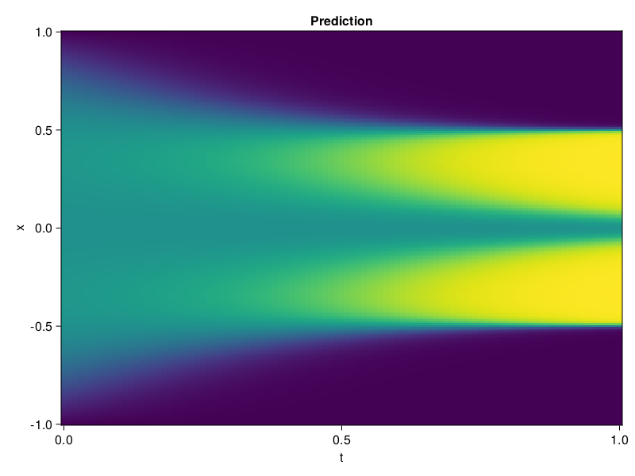

Allen-Cahn Equation with Sequential Training
In this tutorial we are going to solve the Allen-Cahn equation with periodic boundary condition from $t=0$ to $t=1$. The traning process is split into four stages, namely $t\in [0,0.25]$, $t\in [0.0,0.5]$, $t\in [0.0,0.75]$ and $t\in [0.0, 1.0]$.
using ModelingToolkit, IntervalSets
using Sophon
using Optimization, OptimizationOptimJL
@parameters t, x
@variables u(..)
Dₓ = Differential(x)
Dₓ² = Differential(x)^2
Dₜ = Differential(t)
eq = Dₜ(u(x, t)) - 0.0001 * Dₓ²(u(x, t)) + 5 * u(x,t) * (abs2(u(x,t)) - 1.0) ~ 0.0
domain = [x ∈ -1.0..1.0, t ∈ 0.0..0.25]
bcs = [u(x,0) ~ x^2 * cospi(x),
u(-1,t) ~ u(1,t)]
@named allen = PDESystem(eq, bcs, domain, [x, t], [u(x, t)])\[ \begin{align} - 0.0001 \frac{\mathrm{d}}{\mathrm{d}x} \frac{\mathrm{d}}{\mathrm{d}x} u\left( x, t \right) + 5 \left( -1 + \left|u\left( x, t \right)\right|^{2} \right) u\left( x, t \right) + \frac{\mathrm{d}}{\mathrm{d}t} u\left( x, t \right) =& 0 \end{align} \]
Then we define the neural net, the sampler, and the training strategy.
chain = FullyConnected(2, 1, tanh; hidden_dims=16, num_layers=4)
pinn = PINN(chain)
sampler = QuasiRandomSampler(500, (300, 100))
strategy = NonAdaptiveTraining(1, (50, 1))
prob = Sophon.discretize(allen, pinn, sampler, strategy)OptimizationProblem. In-place: true
u0: ComponentVector{Float64}(layer_1 = (weight = [-0.24214211106300354 -0.8473482131958008; 1.5334585905075073 1.4839367866516113; … ; -0.9496873617172241 -1.6556895971298218; 0.3196961283683777 1.3790109157562256], bias = [0.0; 0.0; … ; 0.0; 0.0;;]), layer_2 = (weight = [0.2318187803030014 -0.7070800065994263 … 0.060432929545640945 -0.321952760219574; -0.48993295431137085 0.22194688022136688 … -0.48605987429618835 0.2747701108455658; … ; 0.5649020075798035 0.24886667728424072 … -0.28541991114616394 -0.10509225726127625; 0.6712160110473633 -0.21222630143165588 … 0.3201286196708679 0.4279346466064453], bias = [0.0; 0.0; … ; 0.0; 0.0;;]), layer_3 = (weight = [0.56523597240448 0.7213221788406372 … 0.5862530469894409 -0.6830242872238159; -0.23300360143184662 -0.3878001868724823 … 0.5079877376556396 -0.15805253386497498; … ; -0.15206730365753174 0.0013449365505948663 … 0.026802117004990578 0.016265619546175003; 0.29411017894744873 0.2813209295272827 … -0.19937683641910553 -0.4970187842845917], bias = [0.0; 0.0; … ; 0.0; 0.0;;]), layer_4 = (weight = [-0.2742266356945038 -0.6468420028686523 … -0.2652769088745117 -0.4542290270328522; -0.13120052218437195 0.13956618309020996 … 0.42272379994392395 0.643582820892334; … ; 0.31806790828704834 -0.6863589882850647 … -0.6381762027740479 -0.25208187103271484; 0.6378579139709473 0.10253297537565231 … 0.0811544805765152 -0.3174384832382202], bias = [0.0; 0.0; … ; 0.0; 0.0;;]), layer_5 = (weight = [-0.38442111015319824 0.5621029138565063 … 0.2892712950706482 -0.6761319041252136], bias = [0.0;;]))We solve the equation sequentially in time.
function train(allen, prob, sampler, strategy)
bfgs = BFGS()
res = Optimization.solve(prob, bfgs; maxiters=2000)
for tmax in [0.5, 0.75, 1.0]
allen.domain[2] = t ∈ 0.0..tmax
data = Sophon.sample(allen, sampler)
prob = remake(prob; u0=res.u, p=data)
res = Optimization.solve(prob, bfgs; maxiters=2000)
end
return res
end
res = train(allen, prob, sampler, strategy)u: ComponentVector{Float64}(layer_1 = (weight = [-0.2768583413290894 -0.9259038442065781; 1.310463895908158 0.7239666519946085; … ; -1.0689615504927898 -1.2938581184951325; 0.6209702577551737 1.1562866881218734], bias = [1.0148991135186527; -0.26360485366346126; … ; 1.3739239422169174; 0.1835452175076491;;]), layer_2 = (weight = [0.0895110026662443 -0.4246747593999252 … 0.7799136191844419 0.2645619513993089; -0.5681214190813608 0.4385567925911433 … -0.8180827121546929 -0.0035648853219854195; … ; 0.6652235576395055 0.42101494826023517 … -0.36077013159840604 -0.04608891409935424; 1.2033281921194237 -0.15192303146778902 … 0.7904919106604426 0.42563830125976504], bias = [-0.01993088016286261; -0.1023819102670526; … ; 0.12789019619164613; 0.5846502865006682;;]), layer_3 = (weight = [0.43542294863814296 0.7310830881832059 … 0.4638458868759874 -0.9908976300239628; 0.021557941589698714 -0.7111265117106602 … 0.8216941519744817 -0.5682284233156177; … ; 0.3299275661724839 0.26578900583810866 … 0.06008489981524397 0.29521666106277766; 0.5708793239278982 0.24857552261842458 … -0.3775509120162345 -0.5535379815349027], bias = [-0.06741194669779357; 0.2597117437976002; … ; 0.09754864804854628; -0.14636025260137406;;]), layer_4 = (weight = [-0.618542059329468 -0.47051621264439636 … -0.6173144507210785 -0.49512388042803274; -0.366321094357669 0.06498595524654656 … 0.08504562097081271 1.465708619718762; … ; 0.11290717479051846 -0.3210988512823266 … -0.4650991587689119 -0.5217790105123901; 0.06794321669735172 0.19922027258768688 … 0.657847264974111 -0.47857285296887375], bias = [0.25534736095896365; -0.09256610420230947; … ; -0.29789394274294156; 0.04025131131554562;;]), layer_5 = (weight = [-0.5068506774395406 0.5484622751481807 … 0.44291382167438914 -0.5166340368145644], bias = [0.37118184968203244;;]))Let's plot the result.
using CairoMakie
phi = pinn.phi
xs, ts = [infimum(d.domain):0.01:supremum(d.domain) for d in allen.domain]
axis = (xlabel="t", ylabel="x", title="Prediction")
u_pred = [sum(pinn.phi([x, t], res.u)) for x in xs, t in ts]
fig, ax, hm = heatmap(ts, xs, u_pred', axis=axis)